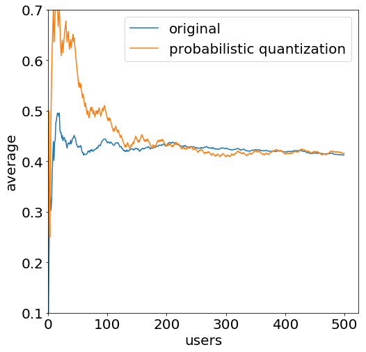

Probabilistic Quantization
Federated Learning is an exciting new subarea of machine learning where the training process is distributed among many users [1]. It is a form of collaborative machine learning with the constraint that the communication can be slow and unstable.
This is easily worth its own post but in a nutshell Federated Learning works like this: A central server maintains a machine learning model. Training data is only available locally on the users’ devices, so from time to time they get a copy of the model and improve it using their locally available data. The weight updates are sent back to the server where they are averaged and the model is updated. This process is then repeated from time to time.
Federated Learning is an incredibly interesting topic because it allows users to keep their data private while a high-quality model can still be trained using it. There are, however, some challenges for making this work. One of them is that a naive approach leads to extremely high communication costs. Neural networks nowadays commonly have millions of parameters and sending updates for millions of weights from a mobile device to a server is not really desirable.
Probabilistic Binarization
Probabilistic Binarization, or Quantization, is one solution to this problem. I found it to be very elegant, so I decided it would be worth writing a blog post about. Fundamentally, it removes a lot of information from individual updates which allows us to encode them using much fewer bits. Still, by taking into account the aggregated weight updates from a lot of users, not much information is lost. This concept reminds me a lot of differential privacy.
To understand the idea, it is important to realize that only the average is important. If a weight update \(h\) is randomized to a compressed version \(h’\), then \(E[h’] = h\) needs to hold. In other words, the compressed estimate needs to be correct on average. This is called an unbiased estimator in statistics.
Having an unbiased estimator allows us to approximate the true weight update more closely and closely as more weight updates are sent. This is known as the law of large numbers. A binarization scheme that implements this idea looks as follows:
where \(h_{\min}\) and \(h_{\max}\) are the smallest and largest values that are reasonable for this weight update.
The denominator in the formula is a normalization factor to make sure that all probabilities are between 0 and 1. The numerators compute the distances between \(h\) and the two bounds. The bound that is closer to \(h\) is chosen with a higher probability.
Convergence
By using this randomization technique, the estimates converge slower to the true mean. I implemented some simulations to play with this. In the image below, 500 users sent random updates using a normal distribution centered around 0.4 with a standard deviation of 0.3. Each simulated user sent their true update and the randomized one. The plot shows the average after \(x\) reports arrived at the server.

As shown, both mean estimates converge to 0.4. The randomized estimate has a slower convergence but it is worth noting that 500 users are not a lot when requiring data for machine learning. Still, it is worth noting that the formal guarantee for convergence is a bit weaker since the training data of users is generally differently distributed.
But all in all, this is a remarkable result: Just by querying some more users, we got the same information while each client needed to send much fewer bits. The compressed weight update \(h’\) can be encoded using one bit (1 for \(h_{\max}\), 0 for \(h_{\min}\)) whereas the original update \(h\) was a 32- or 64-bit float. This is a huge compression factor.
Probabilistic Quantization
The algorithm shown so far could be called probabilistic binarization. Quantization takes the idea one step further: Instead of sending one of two possible values, \(h\) values are possible. To encode an update \(h\), the probabilistic binarization scheme using the two closest values is applied.
Of course, more bits are required to encode the possible values. The trade-off is that convergence can be reached much quicker and that the estimates for the largest and smallest possible values can be less accurate.
Finally, it is worth noting that there are further improves to this algorithm [2]. By applying random rotations, the error when only a few users have sent their data can be reduced. Additionally, this method can be combined with other compression techniques for Federated Learning [2, 3].
References
[1] McMahan, H.B., Moore, E., Ramage, D. and Hampson, S., 2016. Communication-efficient learning of deep networks from decentralized data.
[2] Suresh, A.T., Yu, F.X., McMahan, H.B. and Kumar, S., 2016. Distributed mean estimation with limited communication.
[3] Konečný, J., McMahan, H.B., Yu, F.X., Richtárik, P., Suresh, A.T. and Bacon, D., 2016. Federated learning: Strategies for improving communication efficiency.